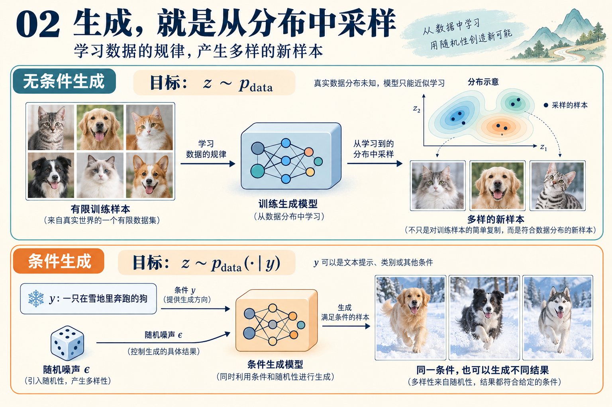

Introduction




生成建模：对象、分布与采样
生成建模的目标，是利用已有数据，学习产生新样本的规律。图像、视频和分子结构虽然形式不同，但都可以先表示为数字，再用概率分布描述它们的变化与多样性。
记号约定： 表示随机变量， 表示具体样本； 表示概率分布， 表示分布具有密度时的概率密度函数。
1．用向量表示数据
一张 RGB 图像可以表示为：.
其中 分别是图像的高度与宽度，三个通道对应红、绿、蓝。
如果视频包含 帧，则：
包含 个原子的分子，其空间坐标可以表示为：
这里的上标 是原子编号。完整的分子表示还可能包含原子类型、化学键等信息。
按固定顺序将这些数值展平，就得到统一的表示：
对应的维数分别为：
展平只是重新排列数值。只要保留形状和排列顺序，就可以还原原来的数组，因此展平本身不丢失信息。
需要区分两个概念：
- 表示维数：记录一个对象用了多少个数值。
- 内在自由度：对象实际上能够独立变化的因素有多少。
一张图像虽然可能包含数百万个像素值，但这些数值之间通常存在很强的关联。
2．用概率分布描述数据的多样性
同一个类别可以包含许多不同的样本。例如，狗的图像可以具有不同的品种、姿态、背景和光照。
用真实数据分布 描述这些变化，生成任务可以写成： 符号 表示“服从某个分布”，也可以从操作角度理解为“从这个分布中采样”。
当数据分布存在密度时：
并满足：
对于样本空间中的一个区域 ，有：
例如，可以表示所有“雪地中的狗”的图像构成的集合。
概率密度与概率
密度描述单位体积附近的概率集中程度。在密度连续的位置，对于足够小的区域 ：
因此， 本身不是恰好生成样本 的概率。对于具有密度的连续分布：
密度可以大于 1，但它在整个空间上的积分必须等于 1。
采样需要保留整个分布的变化
考虑标准高斯分布：
它在 处的密度最大。如果一个生成器始终输出 0，其输出分布就是：
其中 表示全部概率集中在原点。
虽然输出位于高斯分布的最高密度处，但它缺少高斯分布的变化。比较二阶矩即可看出：
而始终输出 0 时：
生成模型需要复现不同结果的出现频率、多样性以及变量之间的关系，而不仅仅是产生某个看起来合理的结果。
3．从有限数据认识未知分布
真实分布通常未知。实际能够获得的是一个有限数据集：.
常见假设是：
其中 i.i.d. 表示独立同分布。
给定观察到的数据，可以定义经验分布：
它相当于给每个训练样本分配 的概率。因此：
也就是数据集中落入区域 的样本比例。
对于一个统计量 ，经验分布下的期望为：
例如， 可以表示图像平均亮度，也可以是“图像中是否包含狗”的指示函数。
经验平均为什么有效？
对于预先固定、满足 的统计量，大数定律给出：
如果进一步有：
利用样本独立性可得：
因此，这个固定统计量的估计标准差为：.
数据量增加，使我们能够更准确地估计总体的统计规律。不过，这并不直接意味着整个生成模型的误差也按 下降。
经验分布与真实分布的区别
经验分布把概率集中在有限个训练样本上，而真实分布可能覆盖更广泛的空间。
如果真实分布没有点质量，令：
则：
所以，“数据越来越能代表真实分布”需要具体说明比较方式。固定统计量的经验平均可以收敛，但不能据此认为经验分布在所有意义下都接近真实分布。
4．生成器如何产生一个分布
生成过程可以抽象为：
其中：
- 是随机输入；
- 是容易采样的分布；
- 是参数为 的生成器；
- 是生成结果。
即使 是确定性函数，只要输入是随机的，输出就可以具有多样性。
从函数到输出分布
对于任意可测区域 ：
这个输出分布称为推前分布：
它描述随机输入经过 变换后，概率如何重新分布。
这里不要求 可逆，也不要求能够计算输出的概率密度。只要能够运行生成过程，就可以从 中采样。
分布匹配的统计含义
对于适当的统计量 ：
理想目标是：
它等价于：
这个等价关系的反方向很直接：取 \(f=\mathbf1_A\)，就得到两个分布对每个区域 \(A\) 都赋予相同的概率。
有限训练数据只能提供真实期望的估计：
因此，学习过程需要根据有限样本，建立能够推广到未见数据的生成规律。
如果生成器只是均匀抽取训练样本：
那么：
这是一个合法的采样器，但它只重现经验分布。能否产生符合总体规律的新样本，还涉及模型的泛化能力。
5．条件生成：学习对象与条件之间的关系
引入条件变量 后，目标变为：
条件 可以是文本提示、类别或其他信息。例如：
生成器相应地写成：
固定条件 ，改变随机输入 ，仍然可以得到不同的合理样本。
条件分布与联合分布
训练数据一般由配对样本组成：
当相关密度或概率质量函数存在，且 时：
条件生成因此需要学习 与 的对应关系。
无条件分布则是各条件分布的混合：
边际分布正确，不保证条件关系正确
用 表示猫、 表示狗。设：
真实数据中，猫提示对应猫，狗提示对应狗。
如果生成器把条件全部反过来：,
则：
两者都生成一半猫、一半狗，无条件分布完全相同。但：
说明条件生成需要满足更具体的目标：
除了样本本身合理，还需要在给定条件下，生成正确的类别、属性与变化范围。
接下来的问题就是：
怎样构造和训练一个既能学习这些规律、又能高效采样的生成器？
References
[1] Peter Holderrieth and Ezra Erives. An Introduction to Flow Matching and Diffusion Models. MIT 6.S184: Generative AI With Stochastic Differential Equations, 2026.
相关内容：第 1 章 Introduction。